,,Lasă-i pe Simși să înoate în ocean într-o zi fierbinte de vară, să caute mere în frunzele de toamnă, să-și testeze abilitățile de snowboarding pe jumătate de țeavă sau să întâmpine dușuri de primăvară cu o plimbare în ploaie și o umbrelă colorată. Activitățile noi, cum ar fi fotbalul, festivalurile mari de sezon și sărbătorile, dau viață spiritului fiecărui sezon. Simșii tăi se pot ridica la standul de sărutări de la festivalul de primăvară sau pot vedea ce surprize de Halloween așteaptă în casa bântuită. Îmbrăcați-vă pentru vreme cu modele sezoniere, de la rochii de soare la haine de ploaie și echipamente de zăpadă. Cu alimente noi, decor și efecte meteorologice, Simșii se pot bucura de recompensa și frumusețea anotimpurilor în continuă schimbare și se pot juca cu viața ca niciodată!"
Despre
The Sims 3 Seasons este al optulea pachet de expansiune pentru The Sims 3. După zvonurile inițiale, EA a confirmat existența pachetului printr-o postare online pe site-ul lor web pe 1 august 2012, urmată de o prezentare de vară pe 2 august 2012, care a confirmat oficial pachetul și a lansat primul trailer oficial al acestuia. Seasons a fost lansat pe 13 noiembrie 2012 în America de Nord și pe 16 noiembrie 2012 în Europa.
Caracteristicile jocului
○ Bucurați-vă de Sims cu noi activități pentru fiecare anotimp: indiferent dacă construiți un iglu intim, să sculptați un felinar înfricoșător Jack o ', să vă aruncați de pe scufundare sau să lansați focuri de artificii noi, Sim-ul dvs. poate găsi întotdeauna lucruri noi de făcut pe tot parcursul anul.
○ Alăturați-vă distracției cu festivaluri sezoniere: Simulatorii se pot lupta cu bulgări de zăpadă la festivalul anual de iarnă, își pot vopsi fețele la festivalul de vară, îl pot arunca la dansul de primăvară sau pot trece la mere în timpul festivalului de toamnă.
○ Experimentați bucuriile și provocările schimbării vremii: Noile efecte meteorologice și reacțiile Sim captează puterea și frumusețea naturii! Simsii se pot bronza, pot fi loviți de fulgere sau pot răci!
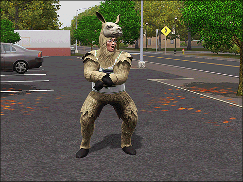
○ Aduceți exteriorul în interior: Simul dvs. poate învăța acum rețeta pentru plăcinta cu dovleac sau își poate amenaja casa cu mobilier și decor noi. Există o serie de articole noi de sunat în fiecare sezon. Obțineți un stand de bronzare la timp pentru vară sau aduceți spiritul sărbătorilor cu lumini și decorațiuni de casă.
○ Îmbrăcați-vă pentru vreme: Îmbrăcați-vă Sim-ul în stiluri noi pentru sezon, inclusiv echipament de zăpadă, costume de baie, haine de ploaie, umbrele și costume noi de Halloween!
○ Bine ați venit vizitatori misterioși: noile modele meteorologice nu sunt singurele lucruri care apar pe cer! Împrieteniți-vă cu un vizitator extraterestru și folosiți OZN-ul lor pentru a răpi un vecin, a invada un lot comunitar sau a călători la stele.
○ Relaxați-vă în stil în ediția limitată Ice Lounge: lăsați-vă Sims-urile să se distreze în stil cu barul de gheață elegant, scaunul de bar și masa de pub. Obiecte precum scaunul de masă cu gheață, masa de luat masa, măsuța de cafea, canapeaua și scaunul pentru copii pot adăuga un stil distinctiv oricărei camere din casa Sims-ului. Lounge-ul cu gheață include, de asemenea, elemente arhitecturale pentru a adăuga o notă subtilă de stil clădirilor Sims-ului tău.
○ Sărbători: puteți sărbători o zi înfricoșătoare toamna, o zi de agrement vara, o zi de dragoste primăvara și o zi cu fulgi de zăpadă iarna.
Detalii
Înotul Oceanului
Simsii pot înota în oceane lângă plaje și zone de coastă și pot face acest lucru pe tot parcursul anului.
Poate fi realizat în orice lume, inclusiv personalizate, World Adventures și lumi de magazine.
Simsii nu pot înota pe căi navigabile / lacuri în niciun lot.
Simsii nu pot să se scufunde în ocean.
Animalele de companie nu pot înota în ocean.
Simsii tai pot curaja chiar și apele înghețate în timpul iernii, în căutarea spiritului Polar Bear Club.
Oceanul va îngheța când temperatura scade suficient de scăzută iarna, împiedicând Sims să înoate.
Simsii vor putea înota într-un corp de apă, chiar dacă are vopsea irecuperabilă așezată sub apă. Există un alt tip de vopsea care poate fi folosit în jurul marginilor lumii pentru a împiedica camera să meargă prea departe, astfel încât să nu poată înota dincolo de acel punct.
Atâta timp cât oceanul, râul sau lacul nu se află pe un lot rezidențial sau comunitar, are o pantă treptată în apă, iar Simsii tai pot merge până la coastă, apoi se pot arunca cu capul chiar în interior!
Simsii își pot dobândi abilitățile sportive, dar pot pierde energie, putând provoca oboseală.
Simsii nu se pot îneca atunci când înoată în ocean. (Din punct de vedere tehnic, acest lucru se datorează incapacității pietrelor funerare de a fi reprodus în afara loturilor.)
Scufundări
Plăcile de scufundare sunt adăugate în joc, ceea ce le permite Sim-urilor să se scufunde în piscine.
Simsii pot intra în piscină, fie făcând o stropire mare, fie scufundându-se cu grație. picaj. - miscari de cascadorie
Cu cât Sim este mai mare, cu atât va fi mai mare stropirea pe care Sim o va face în piscină.
Snowboarding
Simsii pot face snowboard pe jumătăți de țevi.
Simsii pot face snowboard pe tot parcursul anului, deoarece zăpada artificială va fi pe jumătate de țevi atunci când zăpada nu este pe sol.
Descriere: Simsii dvs. se pot îndrepta spre festivalul de iarnă sau pot coborî în jumătatea de snowboard în propriile lor curți pentru a începe să învețe cum să facă snowboard! Practica face perfect; cu cât Sims-urile dvs. petrec mai mult timp pe half-pipe, cu atât vor primi mai bine și cu atât mai EPIC vor fi trucurile pe care le vor putea face!
Boală
Sănătatea simsiilor poate fi afectată. Exemple sunt:
ei pot fi arsi de soare când stau prea mult timp la soare
Pot fi loviți de fulgere în timpul unei furtuni
Pot răci sau chiar gripa
Pot îngheța, dar alți Sim pot să le încălzească
pot face alergii sezoniere, dar pot fi vaccinați. De asemenea, aceștia pot face o vacă împotriva gripei, care este un remediu pentru gripă.
Copiii și adolescenții nu vor primi automat ziua liberă când sunt bolnavi, cu toate acestea, notele lor nu vor avea de suferit dacă vor alege să rămână acasă în acea zi.
Sim-urile care lucrează acum au opțiunea de a suna la serviciu in caz de boala sau o pot falsifica
Vremea
Există cinci tipuri de vreme. Vremea va fi disponibilă și va funcționa în același mod cu magazinele și lumile personalizate.
-Ploaia: Diferite grade de ploaie (ploaie slabă, regulată, furtună cu fulgere).
○ Simulatorii se pot stropi în bălți pentru un pic de distracție, ceea ce poate ajuta la stingerea focurilor în orașul lor sau la udarea plantelor lor.
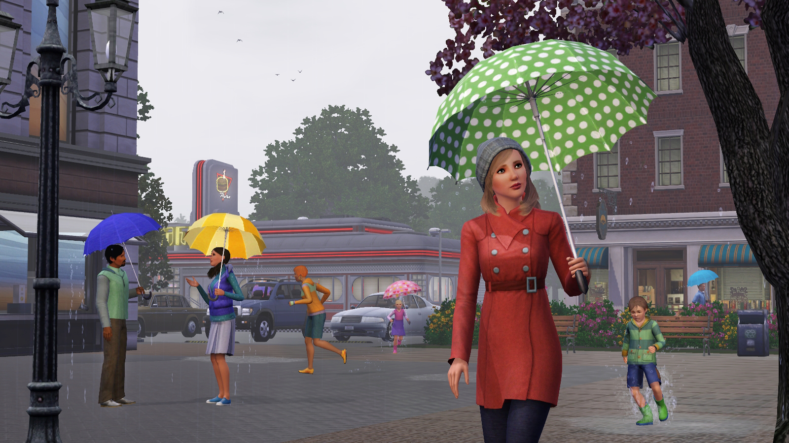
○ Simulatorii sunt capabili să sară pe bălțile de apă create de ploaie.
○ "De fapt, poate ploua în orice moment al anului. Cu toate acestea, frecvența va fi diferită pentru fiecare anotimp. Dacă temperatura este peste îngheț în timpul iernii, veți vedea și ploaie."
○ „Va ploua mai mult primăvara, dar va ploua încă vara ocazional.”
○ S-ar putea să auzi tunetele și să vezi fulgere când furtunile sunt foarte rele.
○ SimBots pot interacționa cu ploaia. Este mai bine să fie atenți înainte de a ieși în condiții meteorologice nefavorabile.
○ Când plouă, Sim-urile care plutesc pe gonflabile în ocean vor ajunge la țărm și își vor ridica umbrelele.
-Soare
-Grindină
-Zăpadă
-Furtuni de zăpadă
-Ceata
-Tunete si fulgere
Imagini
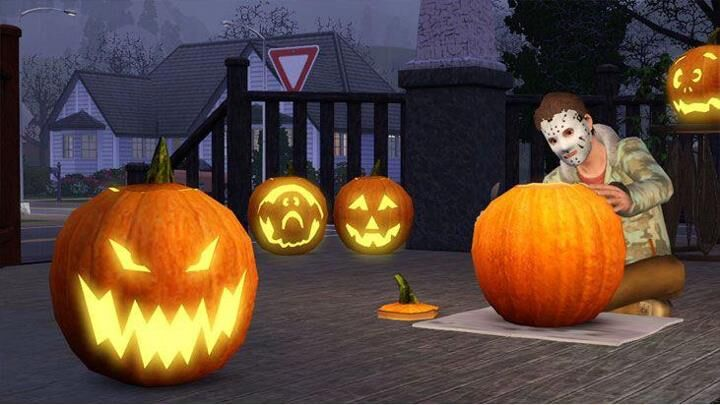
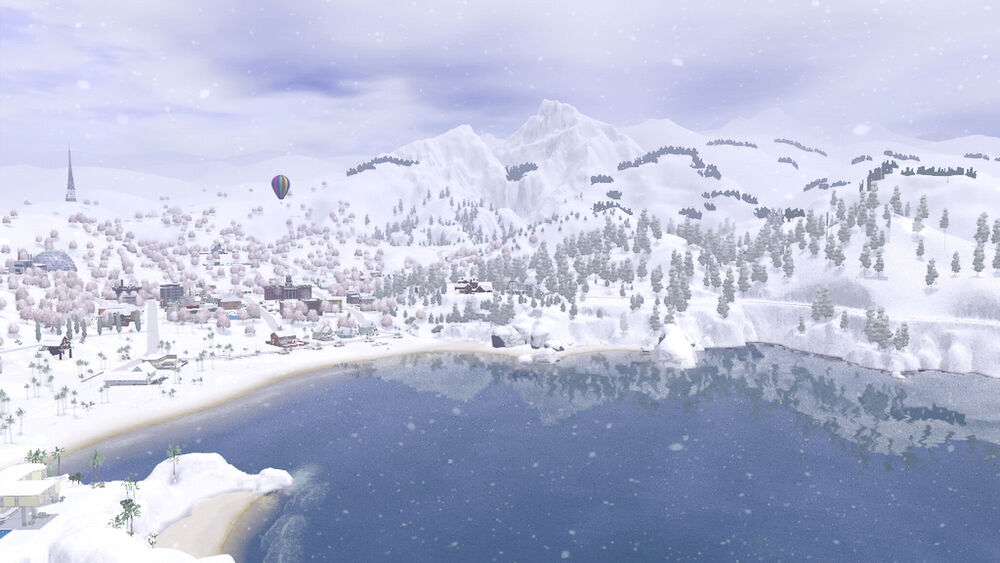
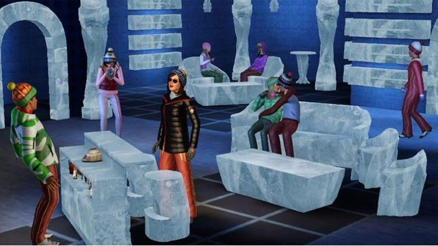
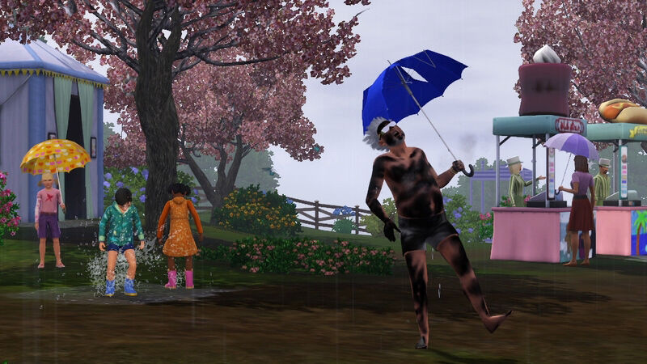
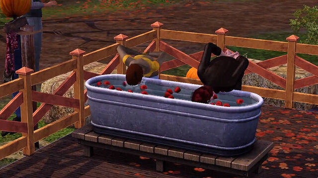
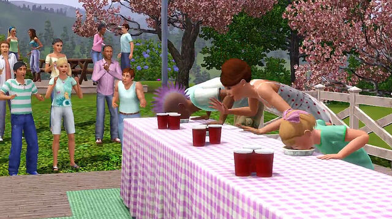
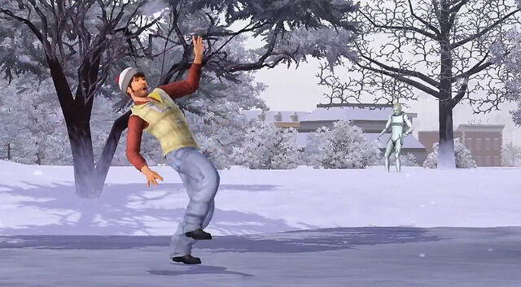
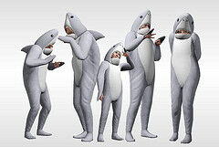
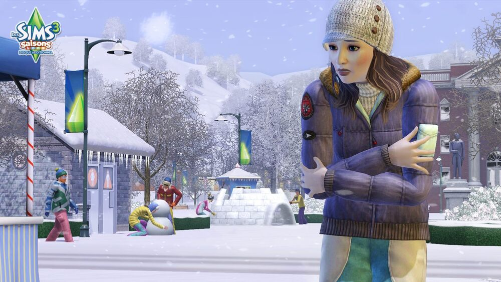
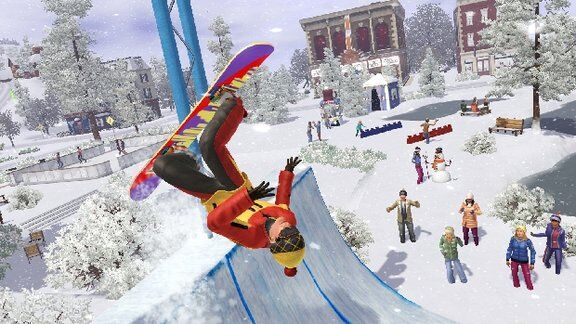
Festivaluri sezoniere
Festivalurile pot funcționa în lumea Custom și Store.
-Fiecare festival, unic sezonului, va transforma lumea Sim-ului complet cu obiecte și decorațiuni noi pe tot parcursul anului.
-Fiecare festival are activități pline de distracție pentru Sims, cum ar fi competiții.
-Fiecare festival are un stand de felicitări unde Sims poate face fotografii cu familia sau prietenii.
-Simsii se adună la festivități pentru activități sezoniere, mâncare, decorațiuni, obiecte și costume. Exemple de astfel de activități în timpul acestor festivaluri sunt:
○ Concursuri de mâncare
○ Sculptarea dovlecilor
○ Patinaj
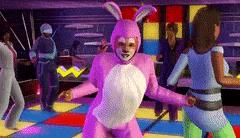
○ Pictarea fețelor
○ Vizionarea focurilor de artificii
○ Dezactivarea opțiunilor meteo nu afectează festivalurile.
○ Dacă jucătorul dezactivează un sezon, va trece peste acea versiune a festivalului.
○ Bilete la festival
○ Simulatorii îi vor primi dacă participă la orice activitate a festivalului
○ Ele pot fi răscumpărate pentru articole la standurile de concesiune.